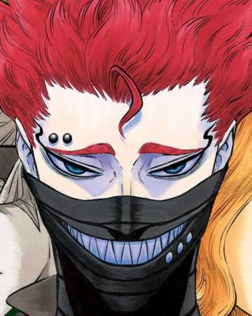

CHARACTERS
YUNO GRINBERRYAL
The rival of Asta who also has high aspirations to become the Wizard King.

ZORA IDEALE
The 1st class Junior Magic Knight of the Clover Kingdom's Black Bull and Royal Knights squads, and the son of Zara Ideale, the first peasant Magic Knight.

LUCK VOLTIA
A member of the Black Bulls, a borderline psychopath who uses Lightning Magic and is always smiling regardless of circumstances, giving him the nickname "Luck the Cheery Berserker".